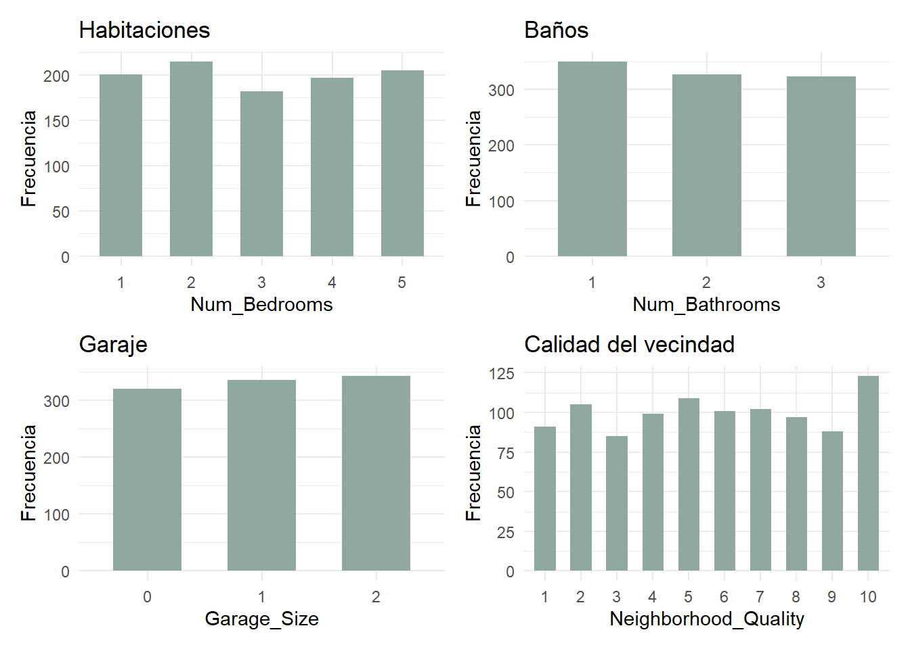
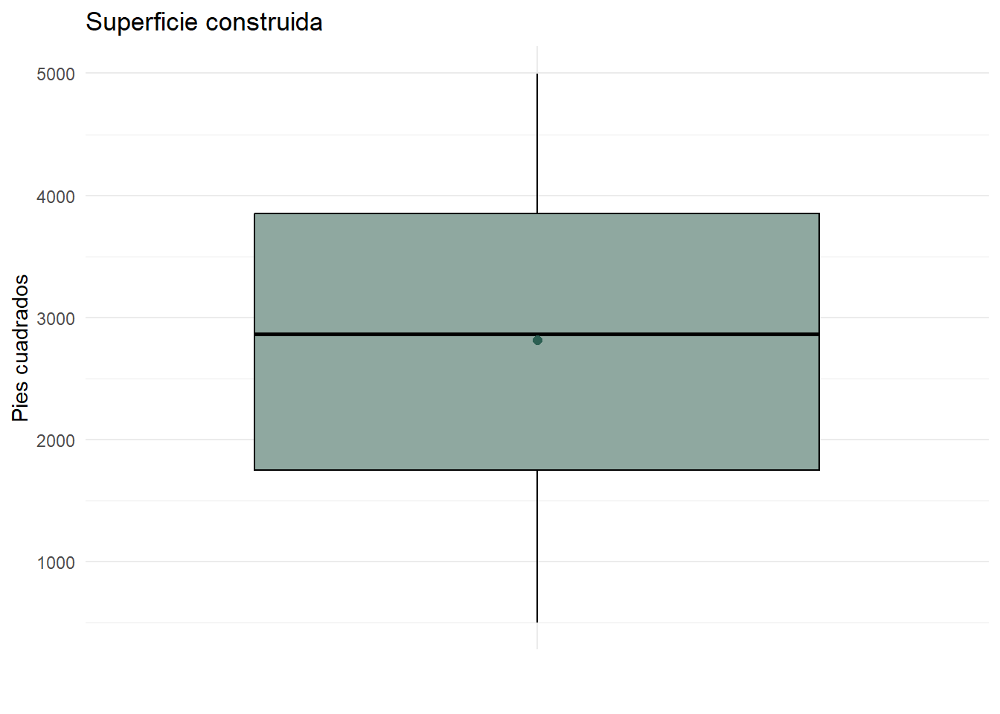
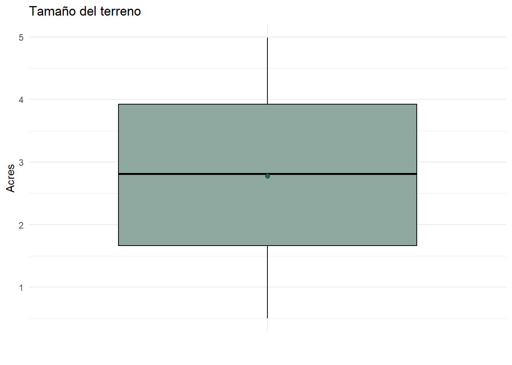
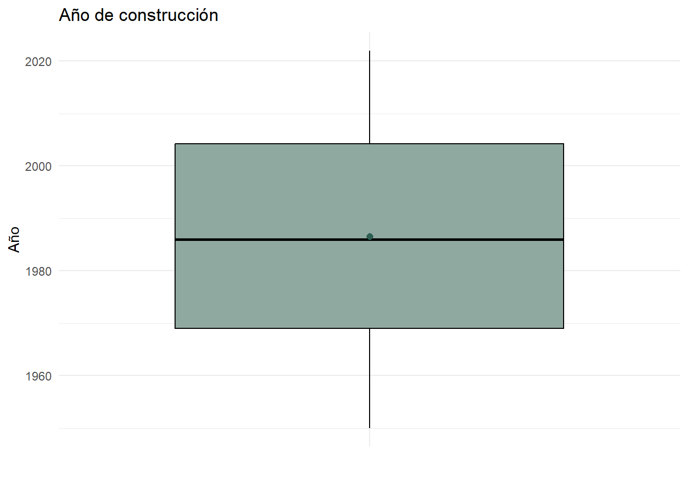

4 Análisis de las variables características (independientes)
Antes de buscar entender qué factores influyen en el precio de la vivienda y evaluar cómo el tamaño del terreno interactúa con el entorno, se hace indispensable analizar las variables características, o también llamadas variables predictoras, del conjunto de datos. Las 7 predictoras (Square_Footage, Num_Bedrooms, Num_Bathrooms, Year_Built, Lot_Size, Garage_Size y Neighborhood_Quality) son todas numéricas, así que primero se resumen todas juntas con los mismos estadísticos de tendencia central, dispersión y forma; las de menor cantidad de niveles (Num_Bedrooms, Num_Bathrooms, Garage_Size y Neighborhood_Quality) se complementan además con tablas de frecuencia y gráficos de barra, y las de rango continuo (Square_Footage, Lot_Size y Year_Built) con diagramas de caja.
4.1 Resumen numérico de las variables predictoras
predictoras <- c("Square_Footage", "Num_Bedrooms", "Num_Bathrooms", "Year_Built",
"Lot_Size", "Garage_Size", "Neighborhood_Quality")
data %>%
select(all_of(predictoras)) %>%
pivot_longer(cols = everything(), names_to = "variable", values_to = "valor") %>%
group_by(variable) %>%
summarise(
n = length(valor),
media = mean(valor),
sd = sd(valor),
mediana = median(valor),
RIC = IQR(valor),
Q1 = quantile(valor, 0.25),
Q3 = quantile(valor, 0.75),
minimo = min(valor),
maximo = max(valor),
asimetria = skewness(valor),
curtosis = kurtosis(valor)
) %>%
kableExtra::kbl(digits = 3) %>%
kableExtra::kable_styling(bootstrap_options = c("striped", "hover", "condensed", "bordered"),
full_width = FALSE) %>%
kableExtra::scroll_box(width = "100%")| variable | n | media | sd | mediana | RIC | Q1 | Q3 | minimo | maximo | asimetria | curtosis |
|---|---|---|---|---|---|---|---|---|---|---|---|
| Garage_Size | 1000 | 1.022 | 0.815 | 1.00 | 2.000 | 0.000 | 2.000 | 0.000 | 2.000 | -0.040 | 1.508 |
| Lot_Size | 1000 | 2.778 | 1.298 | 2.81 | 2.257 | 1.666 | 3.923 | 0.506 | 4.989 | -0.044 | 1.799 |
| Neighborhood_Quality | 1000 | 5.615 | 2.887 | 6.00 | 5.000 | 3.000 | 8.000 | 1.000 | 10.000 | -0.020 | 1.794 |
| Num_Bathrooms | 1000 | 1.973 | 0.820 | 2.00 | 2.000 | 1.000 | 3.000 | 1.000 | 3.000 | 0.050 | 1.489 |
| Num_Bedrooms | 1000 | 2.990 | 1.428 | 3.00 | 2.000 | 2.000 | 4.000 | 1.000 | 5.000 | 0.026 | 1.667 |
| Square_Footage | 1000 | 2815.422 | 1255.515 | 2862.50 | 2100.000 | 1749.500 | 3849.500 | 503.000 | 4999.000 | -0.066 | 1.872 |
| Year_Built | 1000 | 1986.550 | 20.633 | 1986.00 | 35.250 | 1969.000 | 2004.250 | 1950.000 | 2022.000 | -0.021 | 1.814 |
Tratadas numéricamente, las cuatro variables que antes solo se describían con el adjetivo categórico resultan, en realidad, bastante simétricas y de dispersión moderada. Num_Bedrooms (media = 2.99, mediana = 3, asimetría = 0.026) y Num_Bathrooms (media = 1.97, mediana = 2, asimetría = 0.050) se reparten de forma casi pareja alrededor de su valor central; Garage_Size (media = 1.02, mediana = 1, asimetría = −0.040) hace lo mismo entre 0 y 2 vehículos; y Neighborhood_Quality (media = 5.62, mediana = 6, asimetría = −0.020) cubre la escala completa de 1 a 10 sin sesgo hacia ningún extremo. Las cuatro, además, comparten la curtosis platicúrtica (entre 1.49 y 1.79, siempre por debajo de 3) ya documentada en las variables continuas. Square_Footage, Lot_Size y Year_Built repiten los valores ya presentados en el apartado Análisis de la variable objetivo House_Price y se retoman aquí para que la tabla quede completa con las 7 predictoras a la vez.
4.2 Variables discretas: distribución de frecuencias
Como complemento visual al resumen numérico anterior, se construyen tablas de frecuencia y gráficos de barra para las cuatro predictoras de menor cantidad de niveles.
data %>% count(Num_Bedrooms, name = "n") %>%
mutate(Porcentaje = round(n / sum(n) * 100, 2)) %>%
kableExtra::kbl() %>%
kableExtra::kable_styling(bootstrap_options = c("striped", "hover", "condensed", "bordered"),
full_width = FALSE)| Num_Bedrooms | n | Porcentaje |
|---|---|---|
| 1 | 201 | 20.1 |
| 2 | 215 | 21.5 |
| 3 | 182 | 18.2 |
| 4 | 197 | 19.7 |
| 5 | 205 | 20.5 |
data %>% count(Num_Bathrooms, name = "n") %>%
mutate(Porcentaje = round(n / sum(n) * 100, 2)) %>%
kableExtra::kbl() %>%
kableExtra::kable_styling(bootstrap_options = c("striped", "hover", "condensed", "bordered"),
full_width = FALSE)| Num_Bathrooms | n | Porcentaje |
|---|---|---|
| 1 | 350 | 35.0 |
| 2 | 327 | 32.7 |
| 3 | 323 | 32.3 |
data %>% count(Garage_Size, name = "n") %>%
mutate(Porcentaje = round(n / sum(n) * 100, 2)) %>%
kableExtra::kbl() %>%
kableExtra::kable_styling(bootstrap_options = c("striped", "hover", "condensed", "bordered"),
full_width = FALSE)| Garage_Size | n | Porcentaje |
|---|---|---|
| 0 | 321 | 32.1 |
| 1 | 336 | 33.6 |
| 2 | 343 | 34.3 |
data %>% count(Neighborhood_Quality, name = "n") %>%
mutate(Porcentaje = round(n / sum(n) * 100, 2)) %>%
kableExtra::kbl() %>%
kableExtra::kable_styling(bootstrap_options = c("striped", "hover", "condensed", "bordered"),
full_width = FALSE)| Neighborhood_Quality | n | Porcentaje |
|---|---|---|
| 1 | 91 | 9.1 |
| 2 | 105 | 10.5 |
| 3 | 85 | 8.5 |
| 4 | 99 | 9.9 |
| 5 | 109 | 10.9 |
| 6 | 101 | 10.1 |
| 7 | 102 | 10.2 |
| 8 | 97 | 9.7 |
| 9 | 88 | 8.8 |
| 10 | 123 | 12.3 |
Las cuatro variables discretas muestran una distribución de frecuencias equilibrada entre sus categorías:
En Num_Bedrooms, los cinco niveles (1 a 5 habitaciones) se reparten entre el 18.2% y el 21.5% de las viviendas cada uno.
En Neighborhood_Quality, con diez niveles, mantiene una distribución pareja entre el 8.5% y el 12.3% por categoría, sin concentración en los extremos de la escala (baja o alta calidad) ni en el centro.
Num_Bathrooms y Garage_Size, entretanto, muestran un patrón similar, oscilando entre el 32.3% y 35%; específicamente, a Num_Bathrooms le corresponde entre el 32.3% y 35%, mientras que a Garage_Size entre el 32.1% y 34.3%.
Esta lectura numérica se traduce visualmente en los siguientes gráficos de barras, que permitirán confirmar de un vistazo si la uniformidad detectada en las tablas se sostiene también en su representación gráfica.
p4 <- data %>% count(Num_Bedrooms, name = "n") %>%
ggplot(aes(x = factor(Num_Bedrooms), y = n)) +
geom_col(fill = "#8fa8a0", width = 0.6) +
labs(title = "Habitaciones", x = "Num_Bedrooms", y = "Frecuencia") +
theme_minimal()
p5 <- data %>% count(Num_Bathrooms, name = "n") %>%
ggplot(aes(x = factor(Num_Bathrooms), y = n)) +
geom_col(fill = "#8fa8a0", width = 0.6) +
labs(title = "Baños", x = "Num_Bathrooms", y = "Frecuencia") +
theme_minimal()
p6 <- data %>% count(Garage_Size, name = "n") %>%
ggplot(aes(x = factor(Garage_Size), y = n)) +
geom_col(fill = "#8fa8a0", width = 0.6) +
labs(title = "Garaje", x = "Garage_Size", y = "Frecuencia") +
theme_minimal()
p7 <- data %>% count(Neighborhood_Quality, name = "n") %>%
ggplot(aes(x = factor(Neighborhood_Quality), y = n)) +
geom_col(fill = "#8fa8a0", width = 0.6) +
labs(title = "Calidad del vecindad", x = "Neighborhood_Quality", y = "Frecuencia") +
theme_minimal()
(p4 + p5) / (p6 + p7)
Los cuatro gráficos de barra evidencian que, en general, ninguna de las categorías se distingue por una barra drásticamente más alta que las demás, aunque hay anotaciones que vale la pena destacar:
En Num_Bedrooms, la categoría 3 se distingue como la que tiene menor frecuencia de las cinco, mientras que la categoría 2, en contraste, es la más frecuente.
En Num_Bathrooms, la barra de 1 baño es más alta que las otras dos que, a su vez, son casi idénticas entre sí.
En Garage_Size, la barra de 2 vehículos se ubica ligeramente por encima de las demás.
En el caso de Neighborhood_Quality, las categorías 1 a 9 se mantienen dentro de un rango estrecho, pero la categoría 10 (calidad más alta) sobresale, siendo la barra más alta de las diez.
4.3 Variables continuas: diagramas de caja
Retomando los estadísticos ya presentados en el resumen numérico para Square_Footage, Lot_Size y Year_Built, se construyen a continuación diagramas de caja para contemplar visualmente la simetría y detectar valores atípicos en estas tres variables.
p1 <- data %>%
ggplot(aes(x = "", y = Square_Footage)) +
geom_boxplot(fill = "#8fa8a0", color = "black",
outlier.color = "#c47b6b", outlier.alpha = 0.6) +
stat_summary(fun = mean, geom = "point", shape = 20, size = 3, color = "#2c5f52") +
labs(title = "Superficie construida", y = "Pies cuadrados", x = "") +
theme_minimal()
p2 <- data %>%
ggplot(aes(x = "", y = Lot_Size)) +
geom_boxplot(fill = "#8fa8a0", color = "black",
outlier.color = "#c47b6b", outlier.alpha = 0.6) +
stat_summary(fun = mean, geom = "point", shape = 20, size = 3, color = "#2c5f52") +
labs(title = "Tamaño del terreno", y = "Acres", x = "") +
theme_minimal()
p3 <- data %>%
ggplot(aes(x = "", y = Year_Built)) +
geom_boxplot(fill = "#8fa8a0", color = "black",
outlier.color = "#c47b6b", outlier.alpha = 0.6) +
stat_summary(fun = mean, geom = "point", shape = 20, size = 3, color = "#2c5f52") +
labs(title = "Año de construcción", y = "Año", x = "") +
theme_minimal()
Se aprecia una caja simétrica, con la mediana (2.862 pies cuadrados) supuerpuesta con respecto al centro de la caja. Además, los bigotes se extienden hasta los valores extremos reales de la variable (503 y 4.999 pies cuadrados), sin que se recorten antes de llegar a ellos; ningún valor cae fuera del límite de 1.5 veces el rango intercuartílico, y los datos se reparten hasta los extremos sin concentrarse cerca de la mediana.

El comportamiento de Lot_Size es un calco del de Square_Footage en su propia escala. Se ve una caja simétrica centrada en 2.81 acres, con la media y la mediana coincidiendo casi exactamente, y bigotes que se extienden hasta el mínimo (0.51) y el máximo (4.99) reales del conjunto de datos. No hay ningún punto marcado como atípico.

La caja es simétrica alrededor de 1986, con la media y la mediana (1986) superpuestas. Los bigotes llegan hasta 1950 y 2022, sin ningún punto marcado por fuera de ese rango.